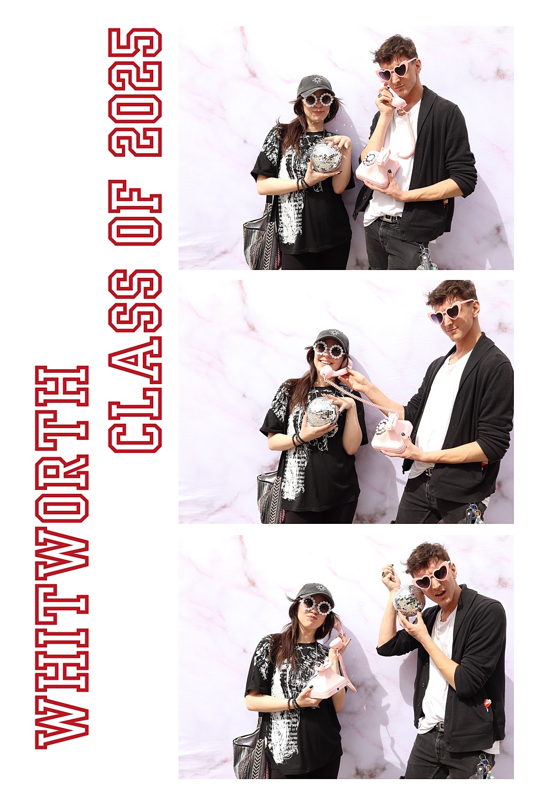

Hey Katie, I know this letter may come as a surprise since we never really got along much, but I truly feel you deserve two things: A round of applause for not putting up with any of my bullshit. Recognition for productively challenging me to grow and learn. Our relationship may have been difficult at times, but you were one of the first professors to acknowledge and accept my passion for more adult content in art—and I will never forget that. You allowed me space to exist at a place like Whitworth, where that kind of openness isn't always easy to find. That space changed my life. I would love to stay in touch after graduation. Maybe we could sit down and talk about these last four years, and you could give me some feedback on how to keep growing as an artist and a person. I'm genuinely grateful for everything you've done for me. Thank you.
